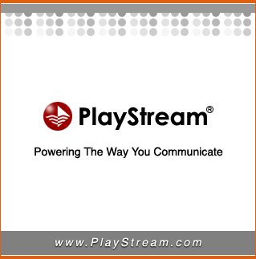

| academic |
| home page |
| Finally, academic planning on our campuses must become more resource driven, with IT seen as an investment opportunity with expected returns. . Critical Factors in Academic IT Planning This paper is the intellectual property of the author(s). It was presented at CAUSE98, an EDUCAUSE conference, and is part of that conference's online proceedings. Critical Factors in Academic IT Planning CAUSE 98 Paul J. |
|  |